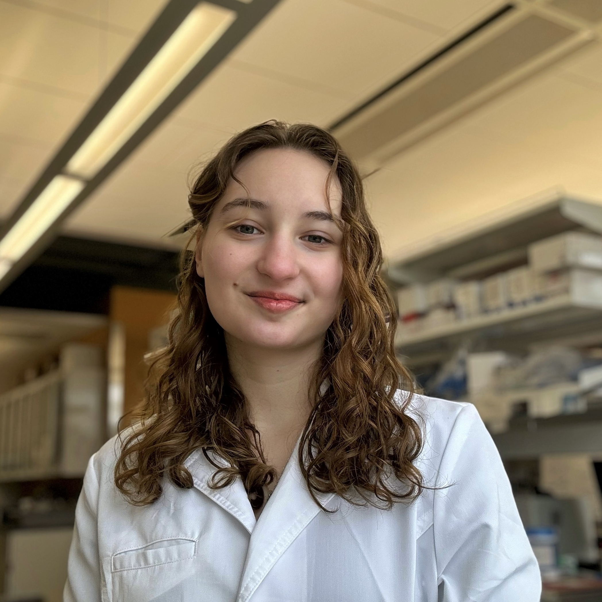

About Elise VanLuinen

Hi! I'm Elise VanLuinen, currently a junior at the University of Rhode Island, pursuing a double major in Biotechnology (B.S.) and Cell & Molecular Biology (B.S.), with a minor in Chemistry, and a particular interest in biochemistry. I'm on track to graduate in May of 2025 and I am an undergraduate researcher on campus under the MARC U STAR program. My ultimate career goal is to become a researcher focused on disease and drug development, aiming to make a positive impact on global health through scientific discovery.
Education
At URI, I am pursuing a double major in Biotechnology (B.S.) and Cell & Molecular Biology (B.S.), along with a minor in Chemistry.
I have completed coursework in Organic Chemistry, Microbiology, Biochemistry, Cell Biology, Virology, Intro to Biotechnology, and Biotechnology Manufacturing Methods.
Research Experience
May 2023 - July 2023
URI Science and Engineering Fellowship
- Designed and performed a research project to create a reference genome for an evolutionarily unique neotropical bellflower species.
- Collaborated in troubleshooting and operating a MinION long read sequencer.
- Assembled and compared genomic data of a bacterium for analysis against existing data.
May 2023 - Present
MARC U*STAR Program
- Engaging in long-term research funded by the NIH in a pharmaceutical lab developing adjuvants for cross-protective Influenza immunity.
- Allowed for rotations and experiences in various laboratories.
Projects
- Development of a Reference Genome for Centropogon Cornutus.
- Development of HA Stem Virus-Like Particle for Universal Influenza Vaccine.
Awards and Scholarships
- 2023-2024: Janice M. Paton Scholarship
- 2022-2025: RI Promise Scholarship
- 2023: Outstanding Presentation of Scientific Research Award
- 2023: Science and Engineering Fellowship
College of Environment and Life Sciences Ambassador
- Promotes and supports academic and extracurricular opportunities for new students.
- Shares personal experiences to guide students in exploring diverse pathways in the environmental and life sciences.
- Facilitates connections between students and the college, enhancing their academic journey.
- Represents the college at various events and encourages student engagement and involvement.
Contact Elise VanLuinen
Feel free to get in touch with me, I look forward to meeting with you soon.